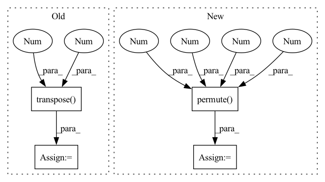

Pattern ID :9488

Before Change
query_flat = query.view(batch, query.shape[1], -1).transpose(1, 2)
key_flat = key.view(batch, key.shape[1], -1).transpose(1, 2)
query = reshape(self.query(query_flat))
key = reshape(self.key(key_flat)).transpose(2, 3)
value = reshape(self.value(key_flat))
attn = torch.matmul(query, key) / sqrt(self.dim_head)
mask, start_mask = causal_mask(height * width)
mask = mask.type_as(query)
start_mask = start_mask.type_as(query)
After Change
attn = torch.softmax(attn, dim=3) * start_mask
attn = self.drop(attn)
y = (attn @ v).reshape(batch_size, height, width, self.head_dim*self.nb_heads).permute(0, 3, 1, 2)
return y
class PixelBlock(nn.Module):
def __init__(self, in_channel, channel, kernel_size, nb_res_blocks, dropout=0.1, condition_dim=0):
In pattern: SUPERPATTERN
Frequency: 4
Non-data size: 4
Instances
Fragment ID: 33911991
Project Name: vvvm23/vqvae-2
Commit Name: e15b9e3d7c13f912682873648e5aaaf81b1dfec5
Time: 2021-06-02
Author: alexander.f.mckinney@durham.ac.uk
File Name: pixelsnail.py
M Class Name: CausalAttention
N Class Name: CausalAttention
M Method Name: forward(3)
N Method Name: forward(3)
M Parent Class: HelperModule
N Parent Class: HelperModule
M File Name: pixelsnail.py
N File Name: pixelsnail.py
M Start Line: 184
M End Line: 204
N Start Line: 110
N End Line: 130
'>
Before Change
value_states = value_states.view(*proj_shape)
src_len = key_states.size(1)
attn_weights = torch.bmm(query_states, key_states.transpose(1, 2))
// q_t is [batch, seq_length, n_heads, dim_per_head]
import ipdb; ipdb.set_trace()
After Change
attn_output = torch.bmm(attn_probs, value_states.view(*proj_shape))
// w_t is [batch, seq_length, n_heads, seq_length]
w_t = attn_output.view(bsz, self.num_heads, tgt_len, self.head_dim).permute(0, 2, 1, 3)
// [batch, seq_length, n_heads, seq_length]
w_tr_matmul = torch.matmul(w_t, relation_v_embeds)
'>
Fragment ID: 33911999
Project Name: joaolages/ratransformers
Commit Name: 87d3c27f618c060b396039f71734d515d3343a4b
Time: 2022-02-11
Author: joaop.glages@gmail.com
File Name: src/ratransformers/bart.py
M Class Name: BartRelationalAttention
N Class Name: BartRelationalAttention
M Method Name: forward(7)
N Method Name: forward(7)
M Parent Class: BartAttention
N Parent Class: BartAttention
M File Name: src/ratransformers/bart.py
N File Name: src/ratransformers/bart.py
M Start Line: 43
M End Line: 138
N Start Line: 43
N End Line: 139
'>
Before Change
x = self.proj(x)
Hp, Wp = x.shape[2], x.shape[3]
x = x.flatten(2).transpose(1, 2)
return x, (Hp, Wp)
class HybridEmbed(nn.Module):
After Change
def forward(self, x):
x = self.proj(x)
// B C H W -> B H W C
x = x.permute(0, 2, 3, 1)
return x
class Attention(nn.Module):
'>
Fragment ID: 33911993
Project Name: alibaba/easycv
Commit Name: 9f01a37ad4df57b30430c41df08459025174e8fd
Time: 2022-09-15
Author: 38110862+tuofeilunhifi@users.noreply.github.com
File Name: easycv/models/backbones/vitdet.py
M Class Name: PatchEmbed
N Class Name: PatchEmbed
M Method Name: forward(2)
N Method Name: forward(2)
M Parent Class: nn.Module
N Parent Class: nn.Module
M File Name: easycv/models/backbones/vitdet.py
N File Name: easycv/models/backbones/vitdet.py
M Start Line: 530
M End Line: 538
N Start Line: 188
N End Line: 191
'>
Before Change
attn_scores = F.softmax(scores, dim=-1)
out = torch.matmul(attn_scores, v)
out = out.transpose(1, 2).contiguous().view(b, -1, self.heads * self.head_dim)
out = self.out(out)
return out
After Change
q = q.permute(0, 2, 1, 3)
k = k.permute(0, 2, 1, 3)
v = v.permute(0, 2, 1, 3)
attn_weights = torch.matmul(q, k.transpose(-2, -1)) / self.scale
attn_weights = F.softmax(attn_weights, dim=-1)
out = torch.matmul(attn_weights, v)
'>
Fragment ID: 33911992
Project Name: asyml/vision-transformer-pytorch
Commit Name: 49517e96e5eccb618d99e3a8909d689020a1612e
Time: 2020-11-14
Author: haoc3@andrew.cmu.edu
File Name: model.py
M Class Name: SelfAttention
N Class Name: SelfAttention
M Method Name: forward(2)
N Method Name: forward(3)
M Parent Class: nn.Module
N Parent Class: nn.Module
M File Name: model.py
N File Name: model.py
M Start Line: 69
M End Line: 83
N Start Line: 85
N End Line: 96